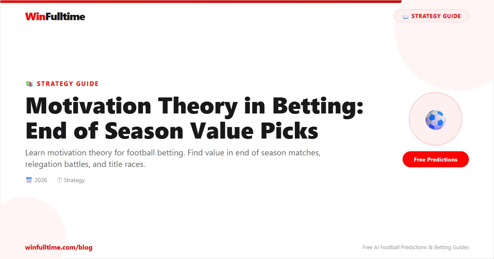

Motivation Theory in Betting: End of Season Value Picks

Updated April 2026 | By WinFulltime Team | 12 min read
Tip: Looking for in-play football predictions? Click here.
Motivation is invisible but powerful. Teams with everything to play for outperform those with nothing left to prove. End of season matches offer the biggest motivation edges.
Understanding Motivation in Football
Teams play differently based on what's at stake:
Title contenders - Must win every game
Relegation battlers - Fighting for survival
European chasers - Champions League/Europa spots
Mid-table dead rubbers - Nothing to play for
Achieved targets - Season done emotionally
High-Motivation Situations
1. Relegation Battle (Last 5 Games)
Teams fighting to stay up are highly motivated. Bet on:
Relegation battlers at home
Draws between two relegation teams
Underperformers vs"nothing to play for" teams
2. Title Race Finale
Favorites often feel pressure in must-win games. Look for:
Away games against defensive teams
Derby games (anything can happen)
Second legs after first leg win (complacency)
3. European Qualification
Teams fighting for Champions League spots:
Strong home record in run-in
Fatigue from Thursday-Sunday schedule
Rotation risks from manager
Real Example: Premier League Run-In
Team in 18th position with 3 games left plays Team in 10th with nothing to play for.
The underdog often wins or draws because they need it more.
Low-Motivation Situations
Teams safe in mid-table (last 3-4 games)
Teams who achieved season target early
Final game of season when nothing at stake
Teams with managers leaving
After mathematical objectives met
?? Key Insight:"Nothing to play for" teams often have less training intensity, rotate players, and play attacking football (no fear of losing).
All content on WinFulltime is for informational and entertainment purposes only. Betting involves financial risk. If you or someone you know has a gambling problem, please seek professional help.